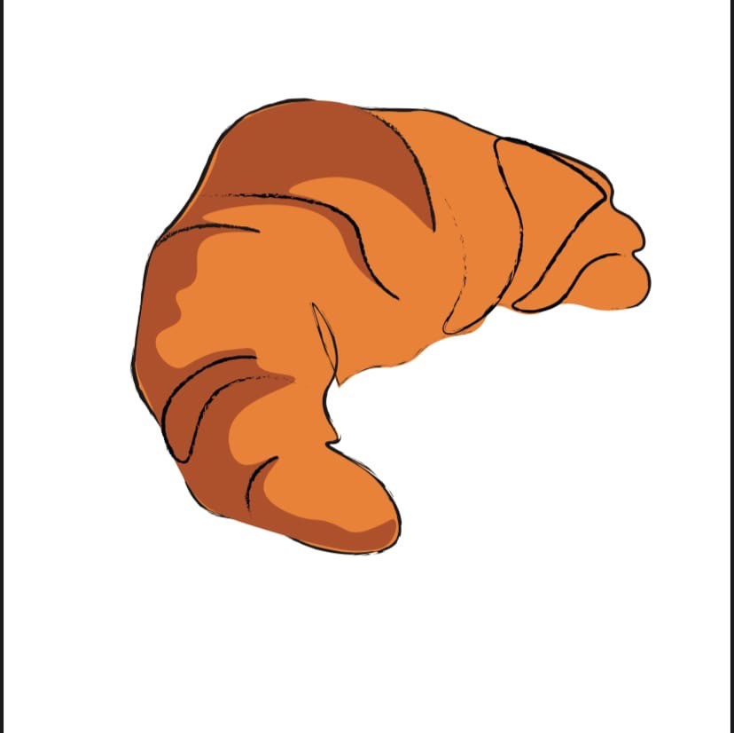
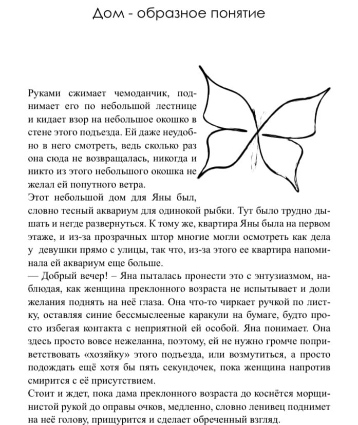

Проект книги для издательства Альпина Паблишер
сюжет книги крутится вокруг девочки, которая меняет имя и внешность каждый раз, когда встречает нового партнёра. после длинных скитаний по миру, изменяя внешность она возвращается в родной дом, чтобы вспомнить своеё прошлое
 - Это книга, позволяет задуматьсвя о том остаёмся ли мы самими собою, когда знакомимся с новыми людьми.